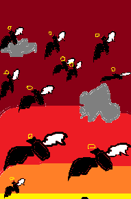

Emilie vous demande de vous placer derrière Silvie pendant qu'elle va parler au prêtre.
Vous entrez tous ensemble dans l'église.
Le prêtre vous remarque tout de suite mais grâce à Silvie il ne peut pas lancer de sort.
Emilie s'adresse au prêtre.
"Mon père, nous devons impérativement écouter le héros"
"Vous ne l'avez toujours pas éliminé, Emilie je comprends encore mais toi Silvie! tu sais l'importance de ta mission"
"Mon père ça peut vous paraître surprenant mais vous devez nous faire confiance"
Le prêtre n'a pas l'air ravi mais enchaine la conversation.
"Très bien, je vais l'écouter mais seul à seul"
Emilie en rage rétorque.
"Non!!! je sais ce que vous avez derrière la tête! on va tous l'écouter et vous avez interdiction de lancer un sort! Je prends mes responsabilités"
Le prêtre choqué par la réaction d'Emilie, accepte avec dépit.
Vous le voyez s'asseoir et vous fait signe, qui vous donne la parole.
Vous vous avancez et avant que vous commenciez votre histoire, Emilie vous coupe pour vous soigner après
Emilie vous regarde et vous sourit fièrement.
"Comme ça on vous croira"
Vous prenez votre courage et dites toute la vérité.
Sur leurs plans, votre rêve avec l'ange, ce qui se passe au village du roi, les quelques images du livre sur le pupitre du prêtre.
Et surtout comment vous avez déclenché l'apocalypse.
Le prêtre vous coupe et rétorque avec fureur.
"Tu vois! faut le tuer! il l'a dit lui-même si c'est très étrange qu'il connaisse les images du livre que seul nous connaissons nous ne pouvons pas le croire."
Emilie enchaine.
"Mon père! il n'a pas fini, comment il a pu déclencher l'apocalypse si nous sommes encore vivants."
Vous voyez la dispute entre Emilie et le prètre se deteriore. Vous crier de toute vos force.
"Je remonte le temps quand je meurs!!!!"
Soudain, un silence règne.
Vous voyez tout le monde choqué par votre déclaration.
Le prêtre coupe le silence.
"Ce qui explique absolument tout."
Vous continuez la conversation.
"Quand j'ai déclenché l'apocalypse les espèces d'anges avaient peur de vous et ils n'étaient pas au courant de mon pouvoir spécial donc je me suis donné la mort pour que vous puissiez trouver une solution à ça"
Au moment où vous dites cela, vous entendez une voix qui hurle.
"Nous pensions que tu allais trouver une stratégie pour les achever, ça serait un spectacle de la destinée mais tu as tout foiré, FUMIER!! tu nous as cassé tout notre plaisir, pour te punir tu vas voir tout le monde mourir sous tes yeux"
Vous êtes sous le choc mais vous saviez que ça allait arriver.
Vous allez dire au prêtre ce qui s'est passé mais ils courent tous dehors.
Vous les suivez et vous voyez que l'apocalypse a commencé.

Le prêtre vous regarde et vous dit.
"Tes paroles leur ont pas plu. Silvie! nous devons aller voir le roi, il possède un dispositif pour arrêter tout ça"
"Compris!!"
Le prètre vous prend par la main et vous dit.
"Tu as dit que tu sais te battre, donc protège-nous jusqu'au village et reste près de Silvie, avec son épée les autres monstres vont pas nous attaquer"
Vous passez à l'attaque.